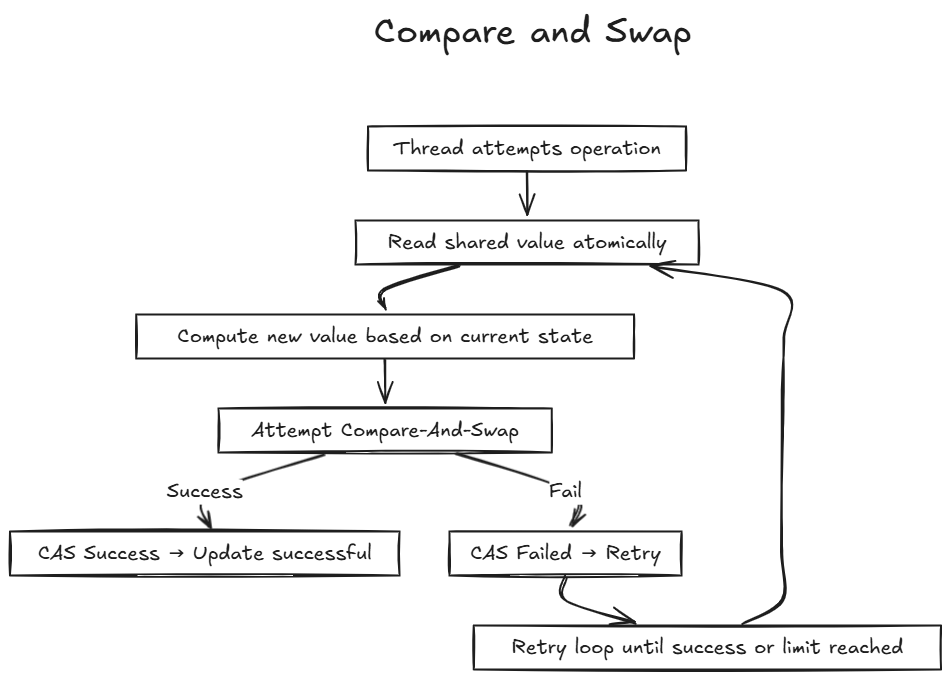

Concurrency has always been a difficult topic for me to wrap my head around, eiter be it in golang, javascript or python. Python and JavaScript approach concurrency in different ways becuase of their runtime environments. In this blog I want to deep dive into theory of concurrency becuase if we understand the engineering behind these topics we can easily code out it any language, thats what I believe.
Concurrency is not about doing many things at once, but about managing multiple tasks in a way that makes progress on all of them, even if they take turns, in todays time it helps to build faster, more reponsive, and scalable applications.
What is Concurrency ??
It is the ability of a program to manage multiple tasks at the same time. Concurrency dosen't necessarily mean these tasks are happening simultaneously ( like in parallel processing), it means they're interleaved or coordinated to make progress together. In programming, concurrency lets our app respond to user clicks while downloading data or processing a file.
it makes our program faster, more responsive, and efficient. Without it, our app might freeze while waiting for a slow database query which will make the users frustate and leave our app.
You might get a question if concurrency is about managing multiple tasks, how does a program actually switch between them without causing chaos ??
So moving to our next topic
Switching between tasks in Concurrency
Programs switch tasks using mechanisms like threads, processes, or event loops, managed by the operating system or the runtime. The CPU can only do one thing at a time, but by rapidly switching, it feels like multitasking
Process : Independent execution units with their own memory space, managed by the operating system. Each process has its own address space, stack and resources. For example, running two python scripts spawns two process. Processes communicate via inter-process communication (IPC) mechanisms like pipes, sockets, or shared files. They are heavyweight due to memory isolation but sage since they don't share data directly.
this is what process looks like under the hood, every other process has its own sets of code memory space and stack resource
Threads : its lightweight execution units within a process, sharing same memory space. They are managed by the OS and are cheaper to create than processes ( less memory overhead ), however shared memoery introduces risks like race conditions.
this is what shared memory space looks like :))
Event Loops : A single threaded mechanism that multiplexes tasks by processing a queue of events (eg. user clicks, I/O completions). The event loop checks for pending events, runs their handlers, and yields control when tasks wait (eg. a for a network reponse). Its like a waiter taking orders one at a time but moving fast keep tables happy.
the operating system's scheduler decides which task runs when, using context switching (saving and restoring task state), and for threads and processes, the scheduler uses preemption (pausing a task to run another) which are based on priorities and time slices.
Here is note from my side, context switching for processes is costlier than for threads due to memory management (e.g., updating page tables). Event loops minimize switching overhead by staying single-threaded, but they require tasks to be non-blocking. Example: In C, pthread_create spawns a thread with low overhead (~10µs), while fork() for a process takes ~100µs due to memory copying.
Okkay now after all this you might have a question if threads share memory, how do we prevent chaos when they access the same data simultaneously ??
Preventing chaos when threads access shared data
Shared memory threads risks race conditions, where the outcome depends on unpredictable execution order. Lets take two threads incrementing a shared variable counter = counter + 1. The operation involves three steps : read counter, increment, write back. If both threads readd counter as 10, increment to 11, and write, the final value is 11 instead of 12 due to overwriting.
Locks (Mutexes) : Ensure only one thread access shared data at a time. It acts like a key, if a thread locks the mutex, no other thread can enter the protected section until the original thread unlocks it. This prevents race conditions when multiple threads try to read or modify the same data simultaneously.
Internal workings of locks in a unit of execution
Semaphore : A semaphore is a more flexible synchronization mechanism than a mutex. It maintains an internal counter representing the number of available resources. Threads can wait on the semaphore (decrementing the counter), and if the counter becomes negative, the thread blocks until another thread signals (increments the counter)
Internal working of sempahores in a unit of execution
These primitives are implemente using OS-level constructs or hardware instructions. However, they introduce overhead and risks like priority inversion, where a low priority thread holding a lock delays a high-priority one.
So now what is overhead, and if locks add overhead and complexity, what to do if threads get stuck waiting for each other ?? But before this we need to know ..
What happens when threads get stuck waiting for locks ??
Lock, like mutexes or semaphores are essential for preventing race conditions when threads access shared data, but they introduce challenges like deadlocks, livelocks and performance overhead, but first what is overhead ?, it refers to the extra computational cost or resources consume by a system, process or operation which is not directly linked to the main task.
Deadlocks : This occurs when two or more threads are stuck, each waiting for a resource another holdds, forming a cicular dependency. Its like Chef A has the knife and needs the cutting board, while cheg B has the cutting board and needs the knife, neither can proceed. In code, this happens when threads acquire locks in different orders. If thread1 locks lock1 and thread2 locks lock2 simultaneously, they deadlock waiting for each other’s lock.
Livelock : Threads are active but make no progress because they keep responding to each other's actions. Taking examples my friends, (i dont have any) we both stepping aside and thinking one will pass but in reality nothing happens. In code, livelocks occur in algorithms where threads retry operations in a loop without resolving conflicts.
Starvation : A thread is denied access to a resource because other threads keep acquiring the lock. This often happens with unfair lock implementation or when high-priority threads dominate.
But now raises the question how do we prevent all these locks from happening ?
Always acquire locks in a consistent order to prevent deadlocks, this requires careful design for your program execution and from my experience the best you can do is use comments in code to serialize your locks :)). This strategy is known as Lock Ordering
Use non-blocking lock attempts to avoid waiting idefinitely or use logic which returns immediately if the lock is unavailable.
We can use timeouts which sets a deadline for lock acquisition, releases if the lock isn't acquired in time
If using lock is soo much hectic, can we coordinate tasks without using them at all ??
Cordinating tasks without Locks
There are two methods by which we can avoid locks that are lock-free programming and message passing.
Lock Free Programming this uses atomic operations, which are hardware-supported instructions that complete in a single, uninterruptible step. These operations avoid locks by ensuring sage updates to shared data. there are some common atomic operations which includes :
Compare and Swap : Checks if a variable has an expected value and updates it if so, atomically.

Fetch and Add : increments a variable and returns its old value.
Test and Set : sets a flag and returns its previous state
Lock-free algorithms are used in data structures like queues or counters, but they’re complex to design due to issues like the ABA problem (where a value changes from A to B and back to A, confusing the algorithm).
Message Passing : Message passing avoids shared memory entirely by having tasks communicate via messages. Each task (or “actor” in the Actor Model) has its own state and processes messages from a queue, eliminating race conditions. This is common in systems like Go’s concurrency model.
Actor Model what are these ?? its is a way to build computer programs that can do many things at once, without getting confused. Instead of sharing data or working on the same memory like in traditional programming, everything in the Actor Model is made up of small, independent units called actors . Each actor can receive messages, make decisions, send messages to other actors, and even create new actors all on their own.
We saw the problem with Locks and also solved it with Lock-free programming, now the question is with scalability for thousands of tasks
Scaling our concurrent program for many tasks
Processes : Scale by distributing tasks across cores or machines. Python’s multiprocessing.Pool creates a fixed number of processes (~10MB each), communicating via Queue. Distributed systems like Apache Spark use processes across nodes, coordinated via network messages. Processes are robust but memory-intensive, ideal for CPU-bound tasks like data analysis.
Threads : Scale using thread pools, which reuse threads (~1MB stack) to avoid creation overhead. Thread pools cap concurrency (e.g., 100 threads) to prevent exhaustion, using work-stealing algorithms for load balancing. Shared memory requires synchronization, limiting scalability under contention.
Event loops scale via OS multiplexing (epoll handles ~1M events), while thread pools optimize via work-stealing. Processes leverage distributed logs (e.g., Spark’s RDDs) for massive scale. Performance depends on workload: Input/Output-bound favors event loops, CPU-bound favors processes/threads.
Hope I was able to add value to your today's learning goal !! Happy Learning ..